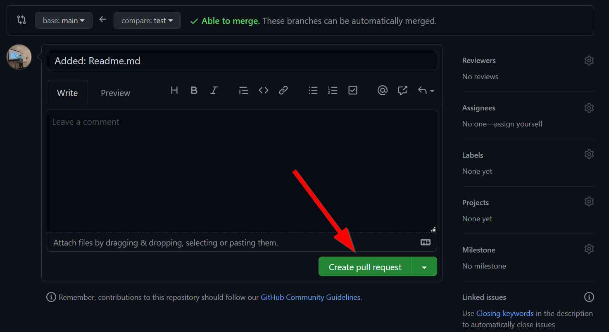
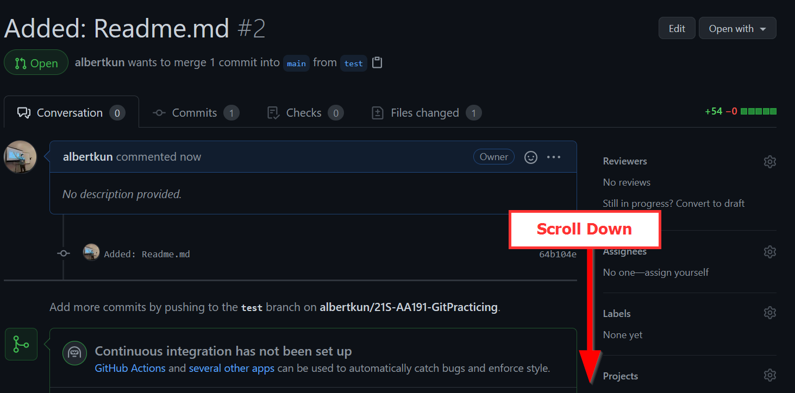
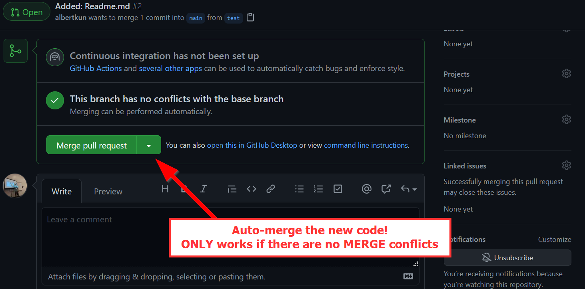
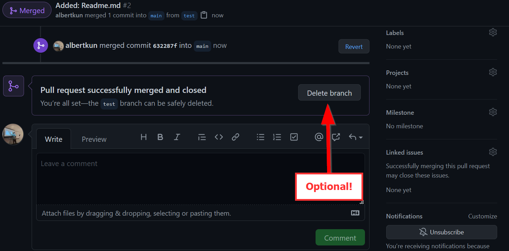
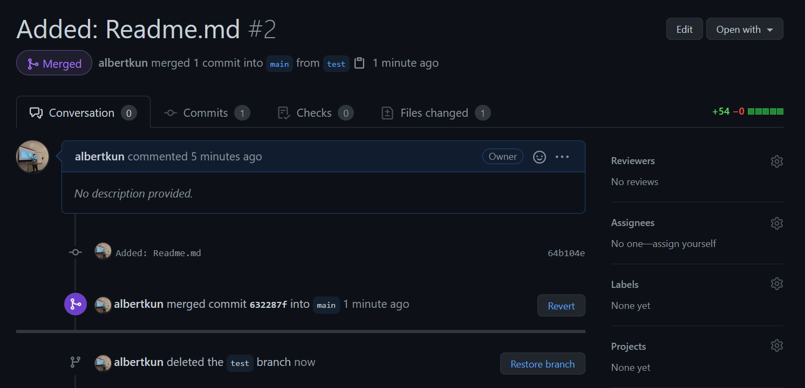

Collaborating with GitHub and Plugins¶
Objectives:¶
- Clone a new repository
- Create a new branch
- Try adding a JavaScript plugin
- Create a pull request
Clone or create a new repo:¶
Start by cloning this repo:
1 | |
Remember, here is the basic git commands for adding new changes:
1 2 3 | |
Refer to this medium post for a refresher on git merges
Making a new branch:¶
1 | |
helloNewBranch and switches to it!
git add . your changes to the new branch:¶
Make some changes and add them to the branch:
1 | |
Add a message to your commit¶
1 | |
Push your changes to your new branch¶
This code creates a new branch called helloNewBranch on GitHub to push to:
1 | |
git push:
1 | |
Updating your branch¶
Sometimes you want to make sure your branch is up to date, so you can use the following command:
1 | |
merge content from main to the branch I am currently on:
1 | |
What happens when a git push affects in a file that was changed locally but someone else edited on GitHub?
Merge Conflicts!!!¶
A merge conflict occurs when one file was changed in two places. For example, Person A edits line 1 of readme.md and Person B also edits line 1 of readme.md. A git doesn’t know which changes to keep, so a person needs to take a look and manually merge them.
First, do a git pull which will check if you are behind a commit:
1 | |
When your commit is behind, you may receive this message:
1 2 3 4 5 | |
Do a git commit:
1 2 3 | |
1 2 3 4 5 | |
git pull
1 | |
Then proceed to push as normal:
1 | |
After choosing an option, you can can push as normal:
1 | |
With a better understanding of branches and merge conflicts, now we can go ahead and test some new features without worrying about blowing up our repository!
Adding a new JavaScript Plugin¶
Remember last week when we added new basemaps?
Taking that one step further we can add brand-new functionality to our maps.
While the Leaflet provider is a plug-in of basemaps for Leaflet, there are many plugins that we can use to add extra functionality to our mapplication in JavaScript as well. Here are some examples:
Visualizations:¶
Functions:¶
Leaflet Related:¶
To keep things simple, we will add a cluster marker functionality to our Leaflet map. Clustering makes it easier to see when multiple points are in the same area.
With just a few changes our map will look as follows:

As with when we first used Leaflet we need to include the library, so in our html add the following lines:
index.html
<!-- Cluster Marker's CSS --> <link rel="stylesheet" href="https://unpkg.com/leaflet.markercluster@1.4.1/dist/MarkerCluster.css" /> <!-- Cluster Marker's JavaScript --> <script src="https://unpkg.com/leaflet.markercluster@1.4.1/dist/leaflet.markercluster.js"></script>
Next, let’s read the documentation on how to use the cluster maker:

Judging from this code, we might be able to simply change our group layers for the markers!
Head over to our init.js file and find the following lines for our group layers:
js/init.js
let speakFluentEnglish = L.featureGroup(); let speakOtherLanguage = L.featureGroup();
Change it to:
js/init.js
let speakFluentEnglish = L.markerClusterGroup(); let speakOtherLanguage = L.markerClusterGroup();
And… wow that’s it!
This flexibility is what makes opensource tools and plugins so great! However, be warned that not all plugins will be as simple to plug and play.
Congrats!
After you’ve made this change the time has come to make a pull request!
Pull Requests¶
I’m sure you’ve seen this nagging icon a lot by now:

You will then be greeted by a new page where you can title, assign, comment, etc. about the pull request (or PR):

and most importantly create a pull request:

After clicking the button to create a new pull request scroll down to the resulting page:

You should be able to click on merge if your pull request has no merge conflicts:

Click to confirm the auto merge:

And now you can delete the branch: 
Warning: Merge Conflicts do not allow you to auto-merge a Pull Request!¶
You will be unable to auto-merge if there is a merge conflict, so refer to the merge-conflict steps in order to finish the pull request.
Completed Pull Request¶
Your completed pull request should look like the following: 
Congrats on finishing the lab! There is no assignment, so you can focus on the Group Assignment #5 due next week.
Group Assignment #5 - Rough Draft¶
Create a functional (doesn’t have to be pretty or clean) version of your mapplication using the survey from students in class.
This assignment will be graded on the following:
1. Fulfillment of the user stories set forth in the memo
2. Relevant functionality that is specific to empowering community voices
3. A readme.md for the repository that describes the technology used for the project and how others could use it in the future
4. A short 2-minute presentation answering:
1. Who is the project for and why is it important?
2. How does the website empower people?
3. What changes you would like to focus on between now and the final? Why?
Everyone is required to speak.
Technical Requirements:¶
- A map is required
- Usage of survey responses is required
- Please come up with a unique name for your group
Submission¶
Post your group’s repository in this assignment thread: https://github.com/albertkun/21S-ASIAAM-191A/discussions/150